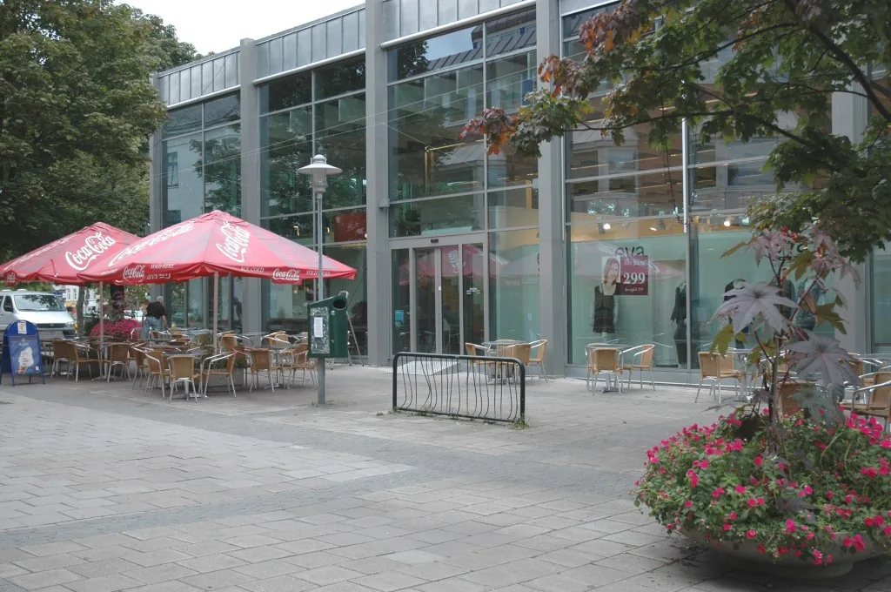

Utsalg
To utsalg og en kafé.
Begge ligger i Åsgårdstrand. Kaféen i Torggården har uteservering når været tillater det.
Torggården
Midt i byen, med kafé og bakeriutsalg. Her kan du sette deg ned med en kopp kaffe og et kakestykke, eller stikke innom for en hyggelig lunsj.
- Mandag–fredag
- 08.30–18.00
- Lørdag
- 08.30–16.00
- Servering
- Kaffe, kakestykker og ferdigsmurte måltid

Aaser Bakerforretning
Vårt andre utsalg i Åsgårdstrand. Her får du brød og bakverk fra samme bakeri — med kortere kø og roligere tempo.
- Mandag–fredag
- 09.00–16.00
- Lørdag
- 09.00–14.30
Kaféen
Baker Nilsen Café
I Torggården serverer vi et stort utvalg ferdigsmurte måltid, kakestykker, kaffe og annen drikke — inne eller ute.
Butikker
Vi leverer til distriktet
Hver virkedag leveres nybakte brød til butikker og utsalg rundt oss. Spør i din lokale butikk.
Bestilling
Kake til anledningen
Bestill på post@baker-nilsen.no, eller ta kontakt via skjemaet.